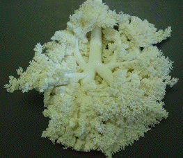
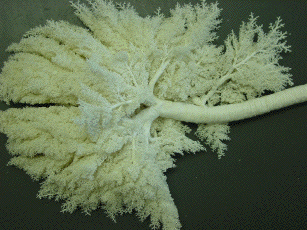

For comparison with human lungs, here are some other mammalian lungs. Note the considerable differences in branching geometry. Click each picture for an enlargement in a new window.
These pictures are of casts loaned by Dr. Robert Henry DMV of the University of Tennessee College of Veterinary Medicine.
| Dog, front | Dog, back |  | |
| Dog, front | Dog, back | ||
| Pig, front | Pig, back |  | |
| Manatee, front | |
Manatee, back | |
| Camel, front | |
Camel, back | |
Return to physiology.